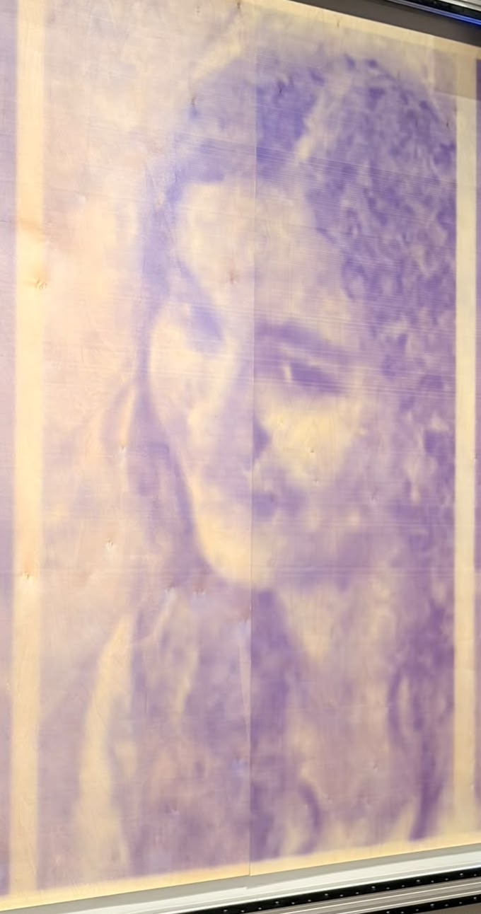
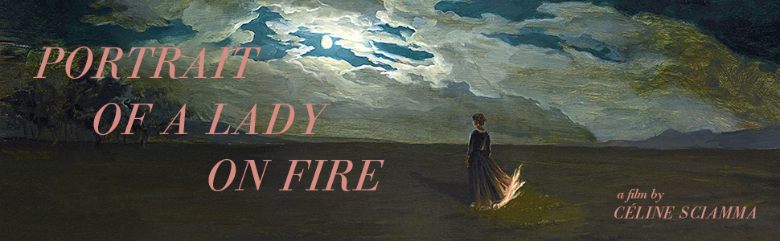
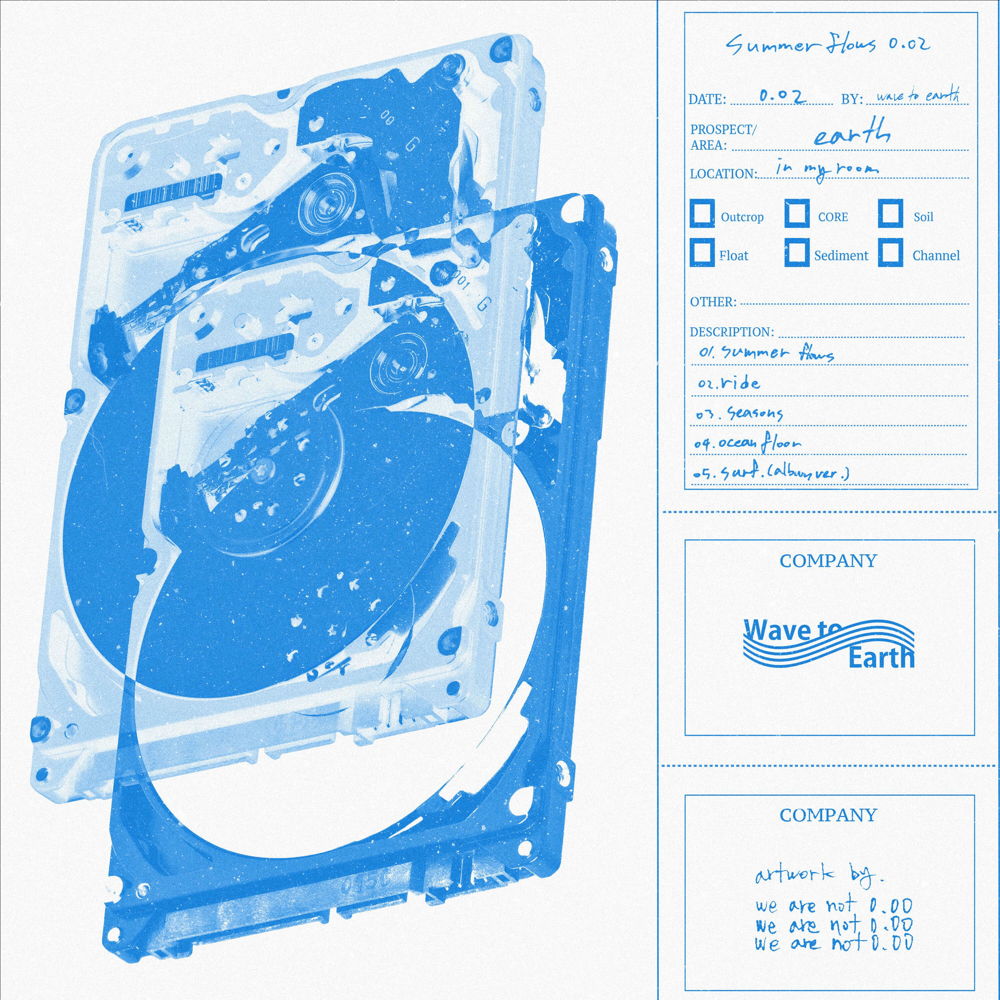

I am an undergraduate in Computer Engineering at NMIMS Mumbai, passionate about research in artificial intelligence. My interests center on Language Models and Computer Vision, and I’m particularly curious about exploring AI evaluation and the mechanistic interpretability of these models.
What excites me most is applying these technologies to solve real-world problems—work that is both innovative and meaningful.

Selected for the prestigious SRIP 2025 program as a Research Intern under Dr. Mayank Singh, working on the project “Building Indic Benchmarks for LLMs” - a part of Project EKΛ, India’s 120B-parameter multilingual open source model initiative.
Worked on a project titled ‘Estimating Breast Tumor Bed Volume using Pre & Post-op scans with Surgical Clips and AI models’ to aid in radiotherapy treatment planning.
Open-source evaluation, inference and training. Each project ships code, a reproducible eval and a write-up.
Outside of tech, I love reading, watching good films, and exploring little things that make life interesting. There’s so much I want to learn and so many paths I’d like to explore—I just hope I get to experience most of them.

Exploring narratives from around the world. Currently revisiting the works of Satyajit Ray.
“The Midnight Library” by Matt Haig. A heartfelt story about second chances and all the lives we could have lived.

The soothing sounds of wave to earth.
Swimming and marathons! And getting back to my old piano and rubik cube skills.